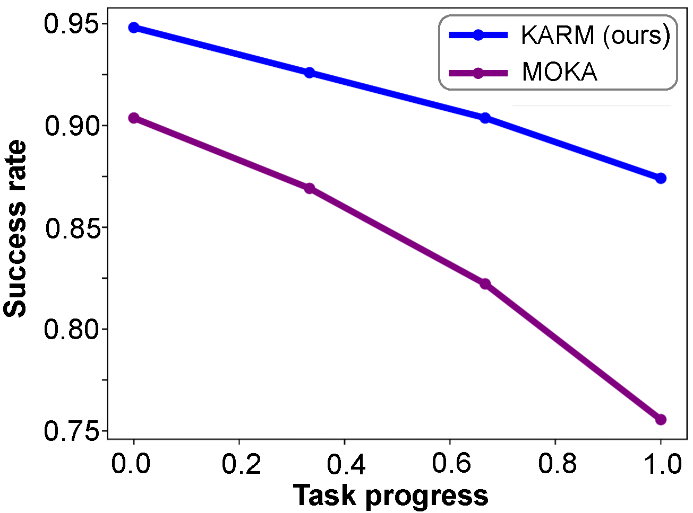
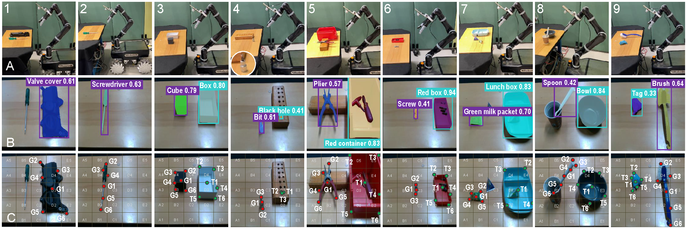
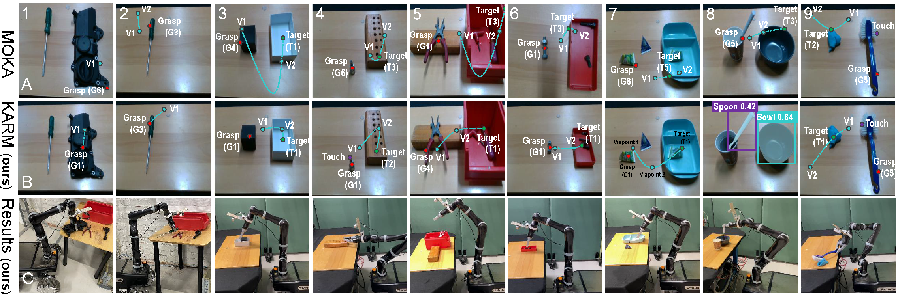
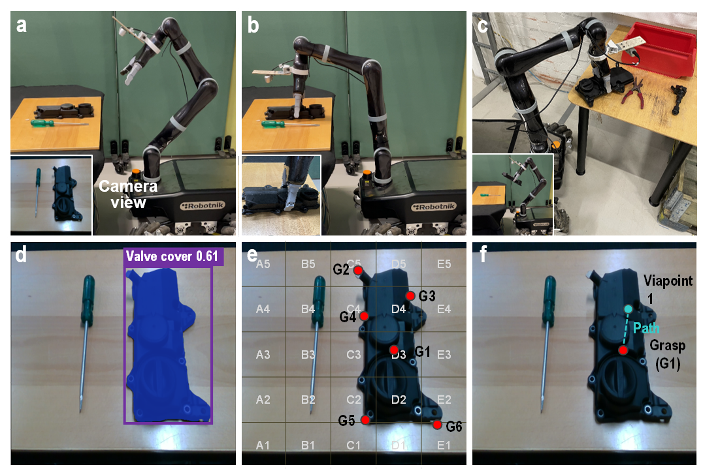

1KTH Royal Institute of Technology, Sweden;2École Polytechnique Fédérale de Lausanne, Switzerland3University of Technology Nuremberg, Germany
Abstract
Figure 1: We propose a vision-language-conditioned keypoint affordance
representation for robotic manipulation. Building on previous keypoint affordance methods [1], our method introduces
a context-enriched prediction scheme that enables robots to reason about environmental contexts and current observations,
facilitating more effective manipulation tasks.
Open-world object manipulation requires a comprehensive understanding of physical scenes and user commands to solve complex tasks. Recent advances in vision-language models (VLMs) have demonstrated capabilities in open-world manipulation problems. However, how to utilise them for fine-grained scene understanding and perform in-context reasoning for mobile manipulation remains an open challenge. For this purpose, this study explores using pre-trained VLMs to interpret scene context information and generate keypoint-based robot action affordance for mobile manipulation. Our method (KARM) enables a fine-grained semantic understanding of the robotic scene including its elements' spatial relationship in a zero-shot manner. By providing a long-horizon task instruction and the scene context to a pre-trained VLM, in-context and common-sense knowledge are combined as clues for the reasoning of logical task decomposition, serving as a key prerequisite for our keypoint-based affordance prediction pipeline. This pipeline extracts optimal manipulation points for the object of interest from observation images, which are consumed by a motion planner for planning and task execution. We design a set of real-world experiments on various manipulation tasks to showcase the superiority of the mixture of a context-based high-level task planner and a low-level robot controller compared to a non-context alternative.
Overview
Figure 2: Overview of vision-language conditioned keypoint affordance representation for robotic manipulation (KARM).
As shown in Figure 2, the vision-language-conditioned keypoint affordance representation method for robotic manipulation
includes three core components. It starts with visual observations of a robotic scene. Prompted with language instructions,
a pre-trained VLM (GPT-o1) is adopted for fine-grained scene descriptions, consistent elements detection, and their spatial
relation representation. Then, given a language-based task, GPT-o1's advanced reasoning is utilised to perform control logic
reasoning behind the language task and further decompose it into a sequence of optimal sub-tasks. For each sub-task and its
annotated images, keypoint affordance representation is proposed to generate candidate keypoints for robot manipulation (e.g.,
grasping), followed by selecting and chaining optimal keypoints for robot path with the prompt by GPT-o1. Finally, the high-level
robot path is linked to the low-level controller for task execution. The system is programmed with Python scripts that run on an
Ubuntu-based PC with an RTX 4090 GPU.
Methodologies
Fine-grained robot representation and understanding
Given the robotic scene image and language tasks, a VLM (GPT-o1) is prompted for scene
description with fine granularity, its constituent element detection, and their spatial
relation representation. The object is described by a mask, a text label and a 2D bounding box.
Given the scene image, the GPT-o1 is prompted by `describe this robotic scene, identify
its constituent elements and their spatial relation', and it originally generates a long text
description of the robotic scene. Here, the simplified description with the spatial representation
and the highlight of the `subject'-`predicate'-`object' are `mobile robot (CL);
2) workbench with tools (L); 3) small wooden table with red container, possible plier and fastening tools
(CR); 4) engine block in wooden crate (R); 5) safety markings (F)', in which `L, R, C, and F' represent
`left, right, centre, and floor', respectively.
Given the language task `pick and place screwdriver on the table near the engine', the `object' is
extracted and formulated as `screwdriver', `table', and `engine', and they are grounded with physical objects.
Figure shows two tables and one engine on the scene are accurately detected and localised.
However, the object of `screwdriver' cannot be detected. By querying the GPT-o1 with multiple scene images, it reasons the spatial relation between
the object with the robotic scene. The response of the GPT-o1 pinpoints that the screwdriver is on the left-side table
of the mobile robot. By grounding the image with the text prompt, the mask, the bounding box, and the text label of the
screwdriver were created (the right part of Figure).
Figure 3: Fine-grained robotic scene understanding, constituent element detection and their spatial relation description.
Control logic reasoning behind language tasks with LLM

Figure 4: Success rate of each control step (subtask) executed on the physical robot,
compared with MOKA (superior over Code-as-Policies and VoxPoser). The subtask progress of the long-horizon tasks is normalised in the
range of [0,1]. We observed that with context-aware subtasks reasoning, our proposed method (KARM) outperforms state-of-the-art
keypoint-based affordance method MOKA.
Our quantitative evaluation results across 9 tasks are illustrated in Figure 4. Each task is experimented with 15 trials for success
rate measure where the object position is different at each trial. The robot sequentially executes subtasks generated by KARM or the
baseline (MOKA). A subtask is deemed successful if the robot can complete it; otherwise, it fails, and no subsequent subtasks are
attempted. For each language task, we record subtask success over 15 trials, normalise the results to [0,1], and then compute an
average success rate across all tasks (shown in Fig. \ref{accuracy_performance}). KARM demonstrates better performance at each
subtask of 9 language tasks, which illustrates consistent improvement by incorporating the context of control step reasoning.
For most of tasks, both methods show similar performance at the execution of the early step of the task, but KARM demonstrates
high consistency in the control steps and subtask execution compared with significant performance degradation of the baseline
method, and this benefits from the proposed control logic reasoning of KARM, which translates the implicit information of the
language task into an explicit representation.
Keypoint affordance representation for robot manipulation

Figure 5: Experimental tasks and results.
The pre-trained VLM is queried to identify the appropriate part of an object for grasping rather than annotating marks generated
from SAM2. The parts of interest are segmented using segmentation networks to extract the segmentation masks, and then given the
identified parts with masks, the pre-trained VLM is employed again to produce keypoint-based affordance representation for robotic manipulation.
Given a pre-trained VLM, it starts with the k-th subtask. The inputs the language task, the input RGB images with part-level granularity, and the
depth images at the k-th subtask, the prompt to produce the keypoint-based affordance representation, and it includes grasping, contact, and target
keypoints, which are chained together to form a robot path.
Figure 5 shows Row (A) experimental setup for 9 manipulation tasks; (B) Grounding text-based objects with the robotic scene with segmentation mask, bounding box, text label and probability; (C) Keypoint-based affordance representation where candidate keypoints for grasping (G: red pots) and target (T: green pots) objects are chosen; Column represents 9 manipulation tasks, namely (1) Pick the valve cover from the black table and place it on the table near the engine; (2) Pick the screwdriver from the black table and place it on the table near the engine; (3) Place the black cube into the white box; (4) Insert the socket bit into the black hole of the wooden holder; (5) Place the plier into the red container; (6) Place a screw into the red box; (7) Place green and purple milk packets into the lunch box; (8) Move the spoon from the paper cup and place it into the bowl; (9) Use the brush to clean the plastic rag. Our method demonstrates high consistency over scene understanding, object grounding and segmentation, and keypoint affordance representation over 9 tasks.
Experimental Results
Manipulation tasks and results
TABLE1 1: Results of control logic reasoning behind language tasks
Task
Grasping object
Target object
Step
Subtask/Motion direction
1
Valve cover
Table near engine
4.
1. Dock in front of the black table./-; 2. Pick the valve cover./Upward; 3. Move to the table near the engine./-; 4. Place the valve cover on the table./Downward.
2
Screwdriver
Table near engine
4.
1. Dock in front of the black table./-; 2. Pick up the screwdriver./Upward; 3. Move to the table near the engine./-; 4. Place the screwdriver on the table./Downward.
3
Black cube
White box
2.
1. Pick up the black cube./upward; 2. Move the black cube onto the white box./from left to right.
4
Socket bit
Black hole
3.
1. Pick up the socket bit./-; 2. Move the socket bit over the block./Upward; 3. Insert the socket bit into the black hole./Downward.
5
Plier
Red container
2.
1. Grasp the left handle of the plier./Upward; 2. Move the plier onto the red container./to the right.
6
Screw
Red box
2.
1. Pick up the screw./-; 2. Move the screw over the red box and place it inside./to the right.
7
Green milk packet & purple milk packet
Lunch box
4.
1. Pick up the green milk packet/upward; 2. Move the green milk packet onto the lunch box/to the right. 3. Pick up the purple milk packet/upward; 2. Move the purple milk packet onto the lunch box/to the right.
8
Spoon
Bowl
3.
1. Pick up the spoon from the cup/upward; 2. Move the spoon over the bowl/from left to right; 3. Place the spoon into the bowl/downward.
9
Brush
Plastic rag
2.
1. Grasp the brush by the near-end part/-; 2. Use the brush to sweep the tag/from right to left.
Experimental results

Figure 6: Experimental results of our method and baseline method.
Figure 6 shows the experimental results of our methods and baseline mthod: Rows (A) and (B) Optimal grasping and target keypoint selection and robot path (cyan
lines) of our method (KARM) and MOKA [1] (V indicates ‘viapoint’); (C) Results of our method over 9 tasks performed by
a robot. MOKA [1] sometimes struggled to predict consistent and logical viapoints and target points (Tasks 3, 4, 5, 8) which
led to failures of the manipulation. However, our method performed in-context subtask reasoning, which provided a more
logical subtasks decomposition for affordance prediction, which greatly improved the prediction consistency and robustness.
Task 1: cross-scene manipulation (valave cover)
Language task: "Pick the valve cover from the black table and place it on the table near the engine."
Figure (a): Experimental setup and execution of Subtask 2;
(b) Robot action: robot is instructed to grasp valve cover via grasping keypoint affordance (G1);
(c) Robot performing subtasks 3 and 4: robot takes valve cover to move to the table near engine, and places it on the table.
(d) Object detection and segmentation;
(e) Candidate keypoints for object manipulation:
(f) Keypoint affordance-based robot path plan.

Task 2: cross-scene manipulation (screwdriver)
Pick the screwdriver from the black table and place it on the table near the engine.